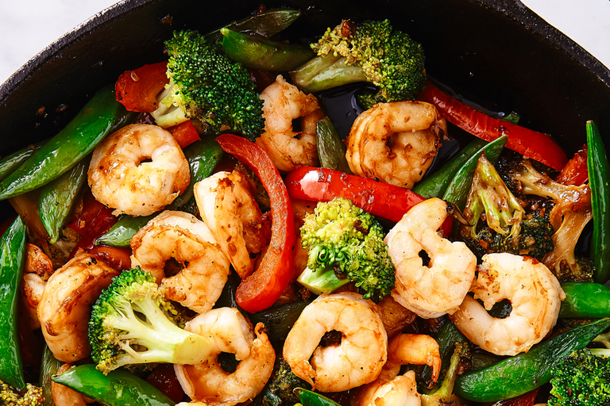

Shrimp Stri Fry

Easy, fast and Healthy!
Traditionally, stir-fries are cooked in a wok over extremely high heat.
While it’s impossible to replicate that in a home kitchen, a cast iron skillet
is the next best thing.
Read on for more top tips on how to make this easy one-pot dinner.
Stir-frying is a fast-paced cooking method, which means there’s no time to be doing any prep work once you start cooking.
You’ll want to make sure all of your ingredients are prepped and ready (we’d even suggest
stirring together the sauce in advance) before you turn on the heat.
Ingredients
- 2 tbsp. extra-virgin
- 1 lb. shrimp, peeled and deveined
- Kosher salt
- 1 tbsp. sesame oil
- 1 small head broccoli, cut into small florets
- 8 oz. sugar snap peas
- 1 red bell pepper, sliced
- 3 cloves garlic, minced
- 1/2 c. low-sodium soy sauce
- 1 tbsp. cornstarch
- Juice of 1 lime
- 2 tbsp. packed brown sugar
- Pinch red pepper flakes
Steps
- In a large skillet over medium heat, heat olive oil.
Add shrimp and season with salt and pepper.
Cook until pink, 5 minutes, then remove from skillet.
- Return skillet to heat and heat sesame oil.
Add broccoli, peas, and bell pepper and cook until soft, 7 minutes.
Add garlic and ginger and cook until fragrant, 1 minute more.
- In a small bowl, whisk together soy sauce, cornstarch, lime juice, brown sugar, and a pinch of red pepper flakes.
Add to skillet and toss to coat.
Add shrimp and cook until heated through, 2 minutes.